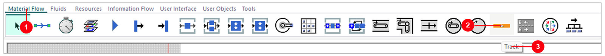
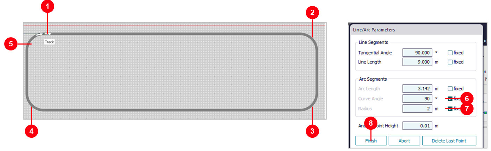
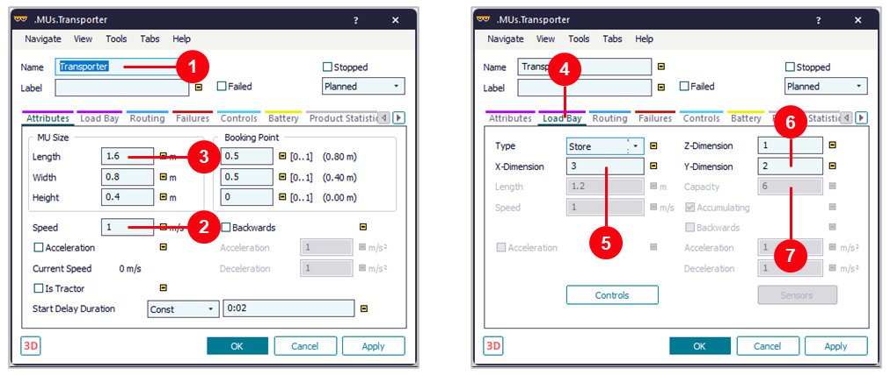
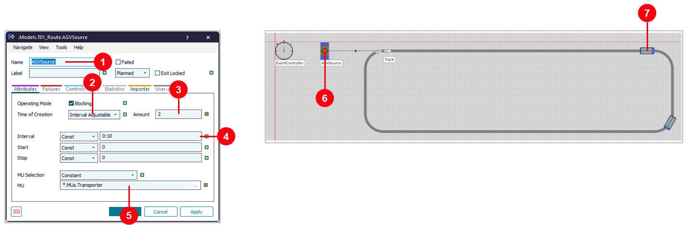
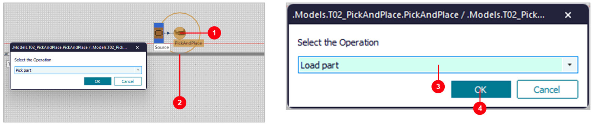
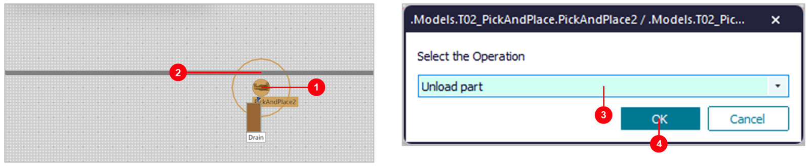
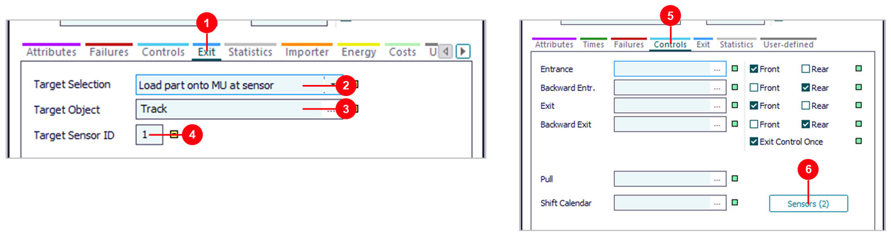
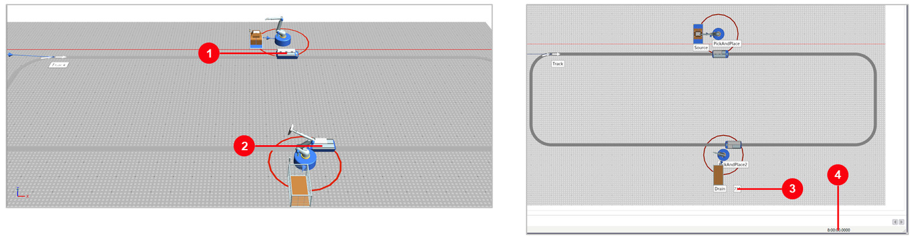
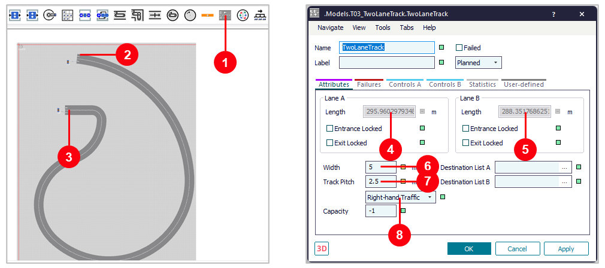
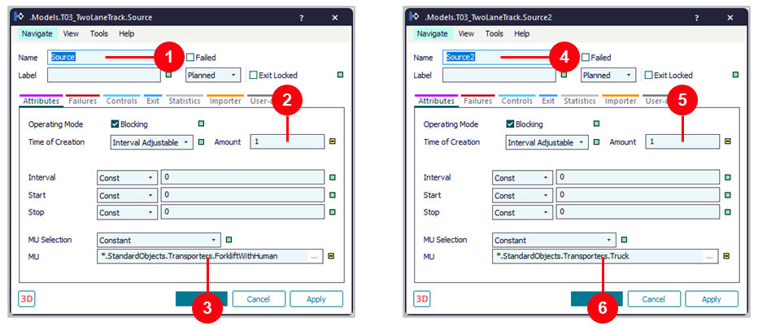

06. Track และ Transporter
วัตถุประสงค์การเรียนรู้
- วาด Track เป็นวงปิดมีมุมโค้ง และให้ AGVSource ปล่อยรถ Transporter วิ่งวนได้
- ลาก PickAndPlace ไปวางบน Track เพื่อโหลด/ขนถ่ายชิ้นงานกับรถโดยไม่ต้องเขียน Method ได้
- อ่านค่าที่ Plant Simulation สร้างให้ (sensor, Exit, OnSensor) และนับผลด้วย Display ได้
- วาด TwoLaneTrack ให้รถวิ่งสวนกันคนละเลนได้
ในบท 05 สายพานพาชิ้นงานและพาเลทวิ่ง บทนี้ให้รถ (Transporter) วิ่งบน Track ขนชิ้นงานแทน — 3 ขั้น: วาดเส้นทางวงปิด, ลากหุ่นยนต์ PickAndPlace วางบน Track ให้โหลด/ขนถ่ายชิ้นงานขึ้นลงรถ และ TwoLaneTrack ให้รถวิ่งสวนกัน 2 เลน ทุกขั้นทำด้วยเมาส์และหน้าต่างตั้งค่า ไม่ต้องเขียน Method เลย ผล: 734 ชิ้น ใน 8 ชม. ด้วยรถ 2 คัน
06_Track_and_Transporter.spp
(เฟรม T01_Route, T02_PickAndPlace, T03_TwoLaneTrack) · ทุกตัวเลขในบทนี้วัดจริงใน PtS 2606 ด้วยไฟล์นี้
ภาพรวม: 3 ขั้น จากวาดเส้นทาง ถึงรถวิ่งสวนกัน 2 เลน
| ขั้น | เรื่อง | ได้อะไร |
|---|---|---|
| 1 | วาดเส้นทาง Track | วงปิด 82.6 m รถ Transporter 2 คัน |
| 2 | PickAndPlace บน Track | ลากวาง Load / Unload ได้ 734 ชิ้น/8 ชม. |
| 3 | TwoLaneTrack | รถยกกับรถบรรทุกวิ่งสวนกันคนละเลน |
3 เฟรมในไฟล์นี้
| เฟรม | เนื้อหา | ขั้นที่ |
|---|---|---|
| T01_Route | Track วงปิด + AGVSource สร้างรถ Transporter 2 คันวิ่งวน ยังไม่มีชิ้นงาน | 1 |
| T02_PickAndPlace | T01 ที่เพิ่มฝั่งชิ้นงาน: Source → PickAndPlace → รถบน Track → PickAndPlace2 → Drain | 2 |
| T03_TwoLaneTrack | TwoLaneTrack 1 เส้น รถยกมีคนขับ (ForkliftWithHuman) เลน A กับรถบรรทุก (Truck) เลน B | 3 |
ขั้นที่ 1: วาดเส้นทาง Track — วงปิดใน 5 ข้อ
| ข้อ | ทำอะไร |
|---|---|
| 1 | เลือก Track |
| 2 | คลิกมุม ทำมุมโค้ง |
| 3 | ต่อปลายเข้าต้น |
| 4 | ตั้งค่า Transporter |
| 5 | AGVSource 2 คัน |
เฟรม T01_Route · ผล: วงปิด 34 × 9 m มุมโค้งรัศมี 2 m ยาว 82.6 m
ขั้นที่ 1.1: เลือก Track จาก Toolbox

- 1Toolbox แท็บ
Material Flow - 2คลิกไอคอนสีส้ม
Track(ทางวิ่งของรถ Transporter) - 3ชี้เมาส์ค้างไว้จะขึ้นชื่อ ใช้ตรวจว่าเลือกถูก (ไอคอนข้างกันคือ Converter)
ขั้นที่ 1.2: คลิกมุมเส้นทาง ทำมุมโค้ง แล้วกด Finish

- 1คลิกจุดเริ่ม แล้วคลิกไปตามแนวตรงด้านบน 30 m
- 2ถึงมุม กด Ctrl ค้างแล้วคลิก = ส่วนโค้ง ทำซ้ำทุกมุม
- 3มุมขวาล่าง
- 4มุมซ้ายล่าง
- 5ขึ้นมาจบใกล้จุดเริ่ม
- 6ส่วนโค้งใช้ค่าในกรอบ
Arc Segments:Curve Angle90° - 7
Radius2 m - 8กด
Finish
ขั้นที่ 1.3: ต่อปลาย Track กลับเข้าต้น Track
- 1Toolbox เลือก
Connector - 2คลิกที่ ปลาย Track (ฝั่งซ้าย ก่อนถึงจุดเริ่ม)
- 3คลิกที่ ต้น Track → เป็นวงปิด รถวิ่งวนได้
ขั้นที่ 1.4: ตั้งค่ารถ Transporter

- 1Class Library >
MUs> ดับเบิลคลิกTransporter - 2
Speed1 m/s (ค่าเริ่มต้น) - 3ขนาดรถ
Length1.6 mWidth0.8 m - 4แท็บ
Load Bay - 5
X-Dimension3 - 6
Y-Dimension2 - 7
Capacity= 3 × 2 = 6 ชิ้น ต่อคัน
MUs.Transporter ตรง ๆ ทุกคันที่สร้างจาก class นี้ได้ค่าเดียวกัน
แท็บ Battery ปิดอยู่ (รถไม่ใช้แบต) · ถ้าอยากให้รถหลายแบบ ให้คลิกขวา Duplicate ไป UserObjects แล้วแก้ที่สำเนาขั้นที่ 1.5: AGVSource สร้างรถ 2 คัน แล้วรัน

- 1วาง Source ซ้ายต้น Track ตั้งชื่อ
AGVSourceต่อ Connector → Track - 2
Interval Adjustable - 3
Amount2 = สร้าง 2 คันแล้วหยุด - 4
Interval0:10 ปล่อยห่างกัน 10 วินาที - 5
MU=*.MUs.Transporter(ลาก Transporter มาวางบน Source ก็ได้) - 6กดรัน
- 7รถ 2 คันวิ่งวน (ภาพที่เวลาจำลอง 40 วินาที)
รถวิ่งรอบละ 82.6 วินาที (82.6 m ที่ 1 m/s) Source ไม่สร้างรถเพิ่มเพราะ Amount = 2
ผลลัพธ์และปัญหาที่พบบ่อย (ขั้นที่ 1)
| อาการ / ค่า | ความหมาย / วิธีแก้ |
|---|---|
| Track 82.6 m รถ 2 คัน 1 m/s | รอบละ 82.6 วินาที รถวิ่งวนถึง 8 ชม. |
| วาดแล้วได้ Converter | ไอคอนผิด ใช้ไอคอนสีส้ม Track (ข้อ 1) |
| มุมเป็นเหลี่ยม ไม่โค้ง | ตอนคลิกมุมต้องกด Ctrl ค้าง (ข้อ 2) |
| รถวิ่งถึงปลายแล้วหยุด | ยังไม่ได้ต่อ Connector ปลาย → ต้น (ข้อ 3) |
| Source สร้างรถไม่หยุด | Amount ต้องเป็น 2 ไม่ใช่ -1 (ข้อ 5) |
ขั้นที่ 2: PickAndPlace บน Track — โหลด/ขนถ่ายด้วยการลากวางใน 6 ข้อ
| ข้อ | ทำอะไร |
|---|---|
| 1 | วาง Source หุ่นยนต์ Drain |
| 2 | ลาก PickAndPlace: Load part |
| 3 | ลาก PickAndPlace2: Unload part |
| 4 | ดูสิ่งที่โปรแกรมสร้าง |
| 5 | Display นับชิ้นงาน |
| 6 | รัน 8 ชม. |
เฟรม T02_PickAndPlace · โมเดล: Source → PickAndPlace → รถบน Track → PickAndPlace2 → Drain (Track และรถเหมือนขั้นที่ 1)
· ผล 734 ชิ้น ใน 8 ชม. รถ 2 คัน (92 ชิ้น/ชม.)
ขั้นที่ 2.1: วาง Source หุ่นยนต์ 2 ตัว และ Drain
- 1
Sourceชิ้นงาน PartInterval0 (มีงานพร้อมเสมอ) - 2
PickAndPlaceข้าง Track ด้านบน ต่อ Connector Source → PickAndPlace - 3
PickAndPlace2ข้าง Track ด้านล่าง - 4
Drainต่อ Connector PickAndPlace2 → Drain - 5
Display(ข้อ 5)
ขั้นที่ 2.2: ลาก PickAndPlace ไปวางบน Track เลือก Load part

- 1กดเมาส์ค้างที่
PickAndPlace - 2ลากไปปล่อยบนเส้น Track ตรงจุดที่จะให้รถจอด หน้าต่าง
Select the Operationขึ้น - 3เลือก
Load part(วางชิ้นงานขึ้นรถ) - 4
OK
ขั้นที่ 2.3: ลาก PickAndPlace2 ไปวางบน Track เลือก Unload part

- 1ลาก
PickAndPlace2 - 2ปล่อยบนเส้น Track ด้านล่าง
- 3
Unload part(เอาชิ้นงานลงจากรถ) - 4
OK→ PickAndPlace2 ส่งต่อให้ Drain ตาม Connector
ขั้นที่ 2.4: สิ่งที่ Plant Simulation สร้างให้

- 1
PickAndPlaceแท็บExit - 2
Load part onto MU at sensor - 3
Target Object= Track - 4
Target Sensor ID= 1 - 5
Trackแท็บControls - 6
Sensors (2): ID 1 ที่ 16.7 m (จุดโหลด) · ID 2 ที่ 54.1 m เรียกself.OnSensorที่โปรแกรมเขียนให้
ขั้นที่ 2.4 (ต่อ): control ที่โปรแกรมเขียนให้ ไม่ต้องแก้
Track.OnSensor ของ T02_PickAndPlace (อ่านจากไฟล์จริง ใช้อธิบายว่าเกิดอะไรขึ้น ไม่ต้องพิมพ์เอง):
param SensorID: integer, Front: boolean
--Activating the sensor moves the parts from the
--container to the specified destination
@.stopped := true
var Destination:object := PickAndPlace2
while not @.Empty
var mu: object := @.cont
if not mu.move(Destination)
stopuntil mu.location /= @ and not Destination.isLoading
end
end
@.stopped := false- 1Track > คลิกขวา
Controls>OnSensor - 2
@.stopped := trueรถหยุดที่ sensor 2 - 3ย้ายชิ้นงานบนรถไป PickAndPlace2 ทีละชิ้นจนรถว่าง
- 4
@.stopped := falseรถวิ่งต่อ
ขั้นที่ 2.5: Display นับชิ้นงานที่ Drain
- 1Toolbox แท็บ
User InterfaceวางDisplayข้าง Drain - 2
Path=Drain.statNumIn(จำนวนชิ้นที่เข้า Drain) - 3
Mode=Watchค่าบนจอเปลี่ยนตามเวลาจริงระหว่างรัน - 4ค่าปัจจุบัน แสดงบนเฟรมข้าง Drain
ขั้นที่ 2.6: รัน 8 ชม. แล้วอ่านผล

- 13D ระหว่างรัน: รถจอดที่ PickAndPlace หุ่นยนต์วางชิ้นงานขึ้นรถ
- 2PickAndPlace2 เอาชิ้นงานลงจากรถส่งเข้า Drain
- 3
Display734 ชิ้นใน 8 ชม. (92 ชิ้น/ชม.) - 4เวลาจำลอง 8:00:00
ปัญหาที่พบบ่อย และวิธีแก้ (ขั้นที่ 2)
| อาการ | วิธีแก้ |
|---|---|
| ลากแล้วหุ่นยนต์ย้ายที่ ไม่มีหน้าต่างเลือก | ต้องปล่อยเมาส์บนเส้น Track พอดี |
| รถผ่านหุ่นยนต์ไปเฉย ๆ | เลือกผิดเป็น Place part → ลากใหม่ เลือก Load part |
| รถจอดนานที่จุดโหลด | รถรอจนเต็ม Load Bay 3 × 2 = 6 ชิ้น ลดขนาด Load Bay ถ้าอยากให้ออกเร็ว |
| มี sensor ซ้ำหลายอัน | ลากซ้ำได้ sensor ใหม่ทุกครั้ง ลบใน Track > Controls > Sensors |
| Display ขึ้น 0 ตลอด | Path ต้องเป็น Drain.statNumIn และ Active เปิดอยู่ ☑ |
ขั้นที่ 3: TwoLaneTrack — รถวิ่งสวนกัน 2 เลนใน 3 ข้อ
| ข้อ | ทำอะไร |
|---|---|
| 1 | วาด TwoLaneTrack |
| 2 | Source ปล่อยรถเข้าแต่ละเลน |
| 3 | รันดูรถวิ่งสวนกัน |
เฟรม T03_TwoLaneTrack · Class Library > StandardObjects > Transporters
· 2 เลน: เลน A 296 m · เลน B 288 m กว้าง 5 m ขับชิดขวา
ขั้นที่ 3.1: วาด TwoLaneTrack แล้วตั้งค่าเลน

- 1Toolbox ไอคอน
TwoLaneTrack(A → / B ←) วาดแบบเดียวกับ Track (ขั้นที่ 1.2) - 2ปลายด้านนอก = ต้นเลน B
- 3ปลายด้านใน = ต้นเลน A
- 4
Lane Aยาว 296 m - 5
Lane Bยาว 288 m - 6
Width5 m - 7
Track Pitch2.5 m ระยะห่างเลน - 8
Right-hand Trafficขับชิดขวา
ขั้นที่ 3.2: Source ปล่อยรถสำเร็จรูปเข้าแต่ละเลน

- 1
Sourceวางที่ปลายด้านใน ต่อ Connector → TwoLaneTrack (เข้าเลน A) - 2
Amount1 - 3
MU=StandardObjects.Transporters.ForkliftWithHuman(รถยกมีคนขับ) - 4
Source2วางที่ปลายด้านนอก ต่อ Connector → TwoLaneTrack (เข้าเลน B) - 5
Amount1 - 6
MU=StandardObjects.Transporters.Truck(รถบรรทุก ยาว 8.3 m)
ขั้นที่ 3.3: รันดูรถวิ่งสวนกัน
- 1ราว 150 วินาที รถยกกับรถบรรทุกวิ่งสวนกันที่โค้งด้านล่าง คนละเลน ไม่ชนกัน (ภาพซ้าย)
ราว 300 วินาที รถถึงปลายอีกด้าน แล้วกลับเข้าอีกเลนวิ่งย้อนกลับเอง (ภาพขวา 5:30)
EventController End = 0 รันไปเรื่อย ๆ จนกด Stop
สรุป 3 เฟรม (PtS 2606)
| เฟรม | ตั้งค่า | เวลาจำลอง | ผล |
|---|---|---|---|
| T01_Route | Track วงปิด 82.6 m · Transporter 2 คัน 1 m/s | 8 ชม. | รอบละ 82.6 วินาที |
| T02_PickAndPlace | ลาก PickAndPlace / PickAndPlace2 วางบน Track · Display | 8 ชม. | 734 ชิ้น · คอขวด = หุ่นยนต์ตัวโหลด |
| T03_TwoLaneTrack | TwoLaneTrack 2 เลน · ForkliftWithHuman + Truck | End = 0 | สวนกัน ~150 วินาที ไปกลับเอง |
ทุกตัวเลขวัดจริงด้วยไฟล์นี้ใน PtS 2606 · ไม่ต้องเขียน Method ทั้ง 3 เฟรม — ลากหุ่นยนต์วางบน Track แล้วโปรแกรมสร้าง sensor และ control ให้ TwoLaneTrack ให้รถวิ่งไปกลับคนละเลนในเส้นทางเดียว · ต่อยอด: จำนวนรถที่เหมาะ แบตเตอรี่และการชาร์จ (แท็บ Battery ของ Transporter) และรถ AGV ในบท 08
ลองเอง
| เฟรม | ลองเปลี่ยน | ดูอะไร |
|---|---|---|
| T01_Route | AGVSource Amount เป็น 4 | ระยะห่างของรถ |
| T02_PickAndPlace | ลดรถเหลือ 1 คัน หรือเพิ่ม Time Factor ของหุ่นยนต์ | Display ที่ 8 ชม. เทียบ 734 ชิ้น |
| T03_TwoLaneTrack | Source2 ปล่อยรถบรรทุก 2 คัน (Amount 2) | รถคันหลังต่อแถวในเลนเดียวกัน |